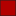

<!doctype html>
<html lang="en">
    <head>
        <meta charset="utf-8">
        <meta http-equiv="X-UA-Compatible" content="IE=edge">
        <meta name="viewport" content="initial-scale=1,user-scalable=no,maximum-scale=1,width=device-width">
        <meta name="mobile-web-app-capable" content="yes">
        <meta name="apple-mobile-web-app-capable" content="yes">
        <link rel="stylesheet" href="css/leaflet.css">
        <link rel="stylesheet" href="css/qgis2web.css"><link rel="stylesheet" href="css/fontawesome-all.min.css">
        <style>
        #map {
            width: 1200px;
            height: 682px;
        }
        </style>
        <title></title>
    </head>
    <body>
        <div id="map">
        </div>
        <script src="js/qgis2web_expressions.js"></script>
        <script src="js/leaflet.js"></script>
        <script src="js/leaflet.rotatedMarker.js"></script>
        <script src="js/leaflet.pattern.js"></script>
        <script src="js/leaflet-hash.js"></script>
        <script src="js/Autolinker.min.js"></script>
        <script src="js/rbush.min.js"></script>
        <script src="js/labelgun.min.js"></script>
        <script src="js/labels.js"></script>
        <script>
        var highlightLayer;
        function highlightFeature(e) {
            highlightLayer = e.target;

            if (e.target.feature.geometry.type === 'LineString') {
              highlightLayer.setStyle({
                color: '#ffff00',
              });
            } else {
              highlightLayer.setStyle({
                fillColor: '#ffff00',
                fillOpacity: 1
              });
            }
        }
        var map = L.map('map', {
            zoomControl:true, maxZoom:28, minZoom:1
        }).fitBounds([[-8.405567189966654,112.17513355619245],[-7.757678582722208,113.32045045416938]]);
        var hash = new L.Hash(map);
        map.attributionControl.setPrefix('<a href="https://github.com/tomchadwin/qgis2web" target="_blank">qgis2web</a> &middot; <a href="https://leafletjs.com" title="A JS library for interactive maps">Leaflet</a> &middot; <a href="https://qgis.org">QGIS</a>');
        var autolinker = new Autolinker({truncate: {length: 30, location: 'smart'}});
        var bounds_group = new L.featureGroup([]);
        function setBounds() {
        }
        map.createPane('pane_PetaOSMStandard_0');
        map.getPane('pane_PetaOSMStandard_0').style.zIndex = 400;
        var layer_PetaOSMStandard_0 = L.tileLayer('http://tile.openstreetmap.org/{z}/{x}/{y}.png', {
            pane: 'pane_PetaOSMStandard_0',
            opacity: 1.0,
            attribution: '<a href="https://www.openstreetmap.org/copyright">© OpenStreetMap contributors, CC-BY-SA</a>',
            minZoom: 1,
            maxZoom: 28,
            minNativeZoom: 0,
            maxNativeZoom: 19
        });
        layer_PetaOSMStandard_0;
        map.addLayer(layer_PetaOSMStandard_0);
        map.createPane('pane_Kemiringanlereng_1');
        map.getPane('pane_Kemiringanlereng_1').style.zIndex = 401;
        var img_Kemiringanlereng_1 = 'data/Kemiringanlereng_1.png';
        var img_bounds_Kemiringanlereng_1 = [[-8.465744157476895,112.28726782181234],[-7.723337813012523,112.96014645412602]];
        var layer_Kemiringanlereng_1 = new L.imageOverlay(img_Kemiringanlereng_1,
                                              img_bounds_Kemiringanlereng_1,
                                              {pane: 'pane_Kemiringanlereng_1'});
        bounds_group.addLayer(layer_Kemiringanlereng_1);
        map.addLayer(layer_Kemiringanlereng_1);
        var baseMaps = {};
        L.control.layers(baseMaps,{"<b>Kemiringan lereng</b></br><table><tr><td></td><td>Datar</td></tr><tr><td></td><td>Landai</td></tr><tr><td></td><td>Agak curam</td></tr><tr><td></td><td>Curam</td></tr><tr><td></td><td>Sangat curam</td></tr></table> ": layer_Kemiringanlereng_1,"<b>Peta OSM Standard</b>": layer_PetaOSMStandard_0,},{collapsed:false}).addTo(map);
        setBounds();
        L.ImageOverlay.include({
            getBounds: function () {
                return this._bounds;
            }
        });
        
        </script>
    </body>
</html>
